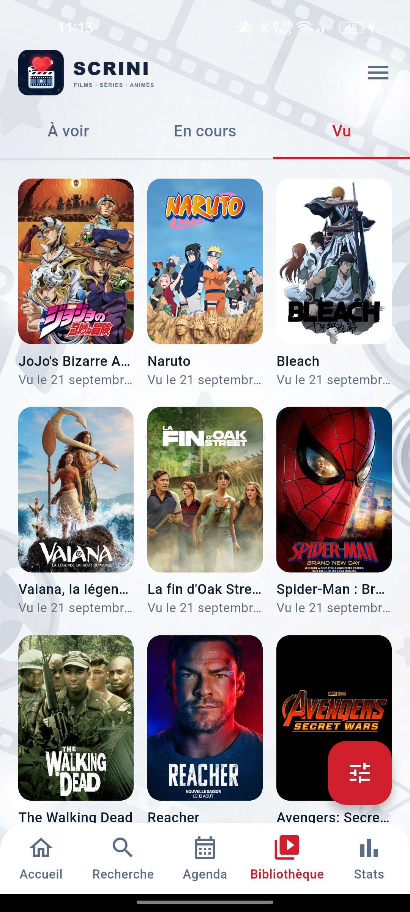

Wo warst du noch mal stehen geblieben?
Behalte die Filme, Serien und Anime im Blick, die du schaust, und erfahre rechtzeitig von kommenden Veröffentlichungen.

Kinostarts
Was in dem Land, das du in der App wählst, im Kino anläuft.
Filter, die wirklich helfen
Demnächst, gerade laufend – und alles kombinierbar.
Kalender und Benachrichtigungen
Die Veröffentlichungen, die dich interessieren, und eine Benachrichtigung am Erscheinungstag.
Filme, Serien, Anime
Alle drei an einem Ort, Folge für Folge verfolgt.
Außerdem in der App
- Serien verfolgen
- Eigene Listen
- Nochmal ansehen
- Anpassbare Startseite
- Statistiken
- Dunkles oder helles Design
- Import aus anderen Apps
Demnächst
- Ausbau der Community-Funktionen: Freunde und Kommentare
- Abzeichen und Erfolge
Die App

Suche

Bibliothek

Statistiken
Deine Daten gehören dir – und niemandem sonst
Scrini zeigt keine Werbung und verkauft deine Daten nicht. Deine Bibliothek gehört dir: Du kannst sie als Tabelle exportieren oder dein Konto mit allem, was darin ist, löschen.
Datenschutzerklärung